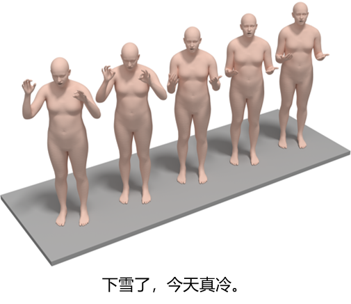
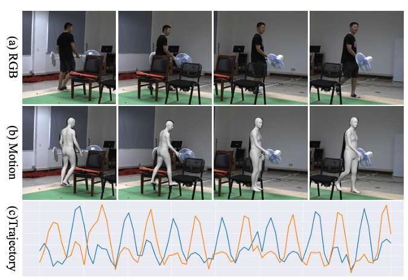
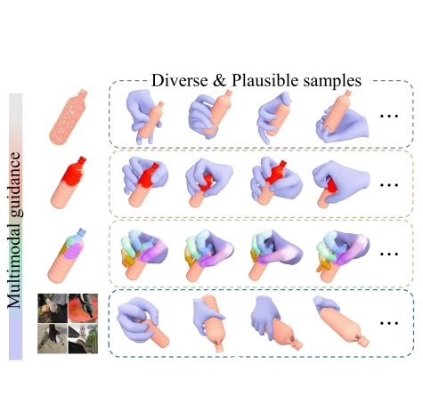
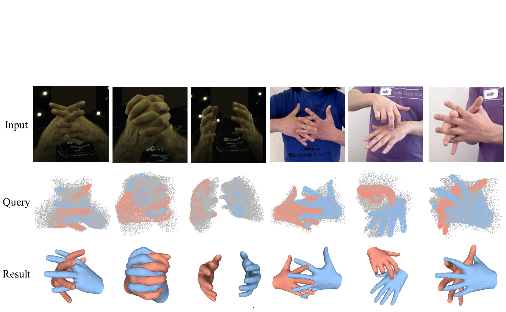

A Low-Latency and Stability-Aware Teleoperation System for Dexterous Arm-Hand ManipulationBinghui Zuo*, Yuhang Kong*, Yihao Bai*, Yue Yu, Yiping Li, and Yangang Wang‡ Preprint, 2026
A real-time teleoperation system used to capture dexterous hand demonstrations, which also support collecting tactile signals.
How to Sustain Tool Use? Interaction-Stable Dexterous Manipulation of Articulated ToolsYiping Li*, Binghui Zuo*†, Anwei Zhang, Zhipeng Yu, Yuzhou Zheng, Zijing Wu, and Yangang Wang‡ Preprint, 2026
A framework models tool articulation and interaction stability to sustain dexterous tool use over extended motion sequences.
Dual-R2H: Dual-Branch Behavior Understanding for Dynamic Robot-to-Human HandoverYue Yu*, Binghui Zuo*†, Lin Tao, Yiping Li, Yihao Bai, Yuhang Kong, and Yangang Wang‡ Preprint, 2026
A dual-branch model jointly reasons about robot and human behavior to understand dynamic robot-to-human handovers.
An interaction-aware UV representation encodes hand geometry and contact cues for monocular hand-object reconstruction.

MaskedSignGen: Part-Aware Masked Modeling with Body-Hand Token Fusion for Text-to-Sign Motion GenerationBinghui Zuo*, Yihao Bai*, Yuhang Kong*, Yunsheng Luo, Yue Yu, Yiping Li, and Yangang Wang‡ Preprint, 2026
Part-aware masked modeling fuses body and hand tokens to generate coherent sign-language motion from text.
MaskDexGrasp: Generative Masked Modeling for Part-Aware Dexterous Grasp SynthesisBinghui Zuo, Lin Zhou, Haoxuan Xu, Jianan Yan, Zhipeng Yu, Zekai Liu, and Yangang Wang‡ IEEE/CVF Conference on Computer Vision and Pattern Recognition (CVPR), 2026[Paper][Project]
A part-aware grasp tokenizer and bidirectional masked grasp transformer synthesize grasps conditioned on geometry and task descriptions.

Occluded Human Body Capture with Frequency Domain Denoising PriorBuzhen Huang, Chongyang Xu, Wentao Tang, Yuan Shu, Jingyi Ju, Binghui Zuo, and Yangang Wang‡ IEEE/CVF Conference on Computer Vision and Pattern Recognition (CVPR), 2026[Paper]
A frequency-domain denoising prior helps recover human body structure and appearance from heavily occluded observations.
Learning Part-Aware Functional Handovers for Human-to-Robot CollaborationBinghui Zuo, Zhuolin Deng, Zhipeng Yu, Yuzhou Zheng, Wenqian Sun, and Yangang Wang‡ IEEE Transactions on Industrial Electronics (TIE), 2026[Paper]
A part-aware framework aligns robot receiving behaviors with human delivery actions.
Two-stage Diffusion for Hands and Articulated Objects Interaction SynthesisWenqian Sun*, Binghui Zuo*†, Zimeng Zhao, Zijing Wu, and Yangang Wang‡ Pattern Recognition (PR), 2025[Paper]
A two-stage approach synthesizes interactions between two hands and an articulated object from a target state.
NP-Hand: Novel Perspective Hand Image Synthesis Guided by NormalsBinghui Zuo, Wenqian Sun, Zimeng Zhao, Xiaohan Yuan, and Yangang Wang‡ IEEE Transactions on Image Processing (TIP), 2025[Paper][Project]
Normal maps guide a diffusion-and-GAN framework for consistent novel-view hand synthesis.
T2C: Text-guided 4D Cloth GenerationZhipeng Yu, Zimeng Zhao, Yanxi Du, Yuzhou Zheng, Binghui Zuo, and Yangang Wang‡ ACM Transactions on Multimedia Computing, Communications and Applications (TOMM), 2025[Paper]
T2C generates text-controlled clothed 4D humans through layered clothing representations and physics-inspired animation.

GraspDiff: Grasping Generation for Hand-Object Interaction With Multimodal Guided DiffusionBinghui Zuo, Zimeng Zhao, Wenqian Sun, Xiaohan Yuan, Zhipeng Yu, and Yangang Wang‡ IEEE Transactions on Visualization and Computer Graphics (TVCG), 2024[Paper][Project]
Multimodal guided diffusion generates plausible grasps by conditioning hand-object interaction on geometry, contact, and task cues.
Reconstructing Interacting Hands with Interaction Prior from Monocular ImagesBinghui Zuo, Zimeng Zhao, Wenqian Sun, Wei Xie, Zhou Xue, and Yangang Wang‡ IEEE/CVF International Conference on Computer Vision (ICCV), 2023[Paper][Project]
The reconstruction task is recast as conditional sampling from a learned two-hand interaction prior.
Nonrigid Object Contact Estimation With Regional Unwrapping TransformerWei Xie, Zimeng Zhao, Shiying Li, Binghui Zuo, and Yangang Wang‡ IEEE/CVF International Conference on Computer Vision (ICCV), 2023[Paper][Project]
Semi-supervised Hand Appearance Recovery via Structure Disentanglement and Dual Adversarial DiscriminationZimeng Zhao, Binghui Zuo, Zhiyu Long, and Yangang Wang‡ IEEE/CVF Conference on Computer Vision and Pattern Recognition (CVPR), 2023[Paper][Project]
A semi-supervised framework disentangles bare-hand structure and recovers appearance with dual adversarial discrimination.
Skeleton Extraction for Articulated Objects with the Spherical Unwrapping ProfilesZimeng Zhao, Wei Xie, Binghui Zuo, and Yangang Wang‡ IEEE Transactions on Visualization and Computer Graphics (TVCG), 2023[Paper][Project]
Spherical Unwrapping Profiles map surfaces into image planes independently of mesh topology.
HMDO: Markerless Multi-view Hand Manipulation Capture with Deformable ObjectsWei Xie *, Zhipeng Yu *, Zimeng Zhao, Binghui Zuo, and Yangang Wang‡ International Conference on Computational Visual Media (CVM, Oral), 2023[Paper][Project]
A markerless dataset and baseline capture hand interactions with deformable objects.

Implicit Representation for Interacting Hands Reconstruction from Monocular Color ImagesBinghui Zuo, Zimeng Zhao, Wei Xie, and Yangang Wang‡ International Conference on Image and Graphics (ICIG, Oral), 2023[Paper]
Implicit functions represent interacting hand surfaces using image features as queries and conditions.
Stability-driven Contact Reconstruction From Monocular Color ImagesZimeng Zhao, Binghui Zuo, Wei Xie, and Yangang Wang‡ IEEE/CVF Conference on Computer Vision and Pattern Recognition (CVPR), 2022[Paper][Project]
A physics engine refines reconstructed hand-object interactions to produce more realistic results.